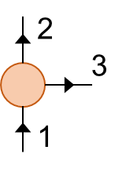
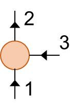
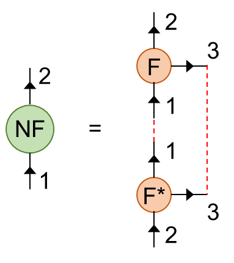
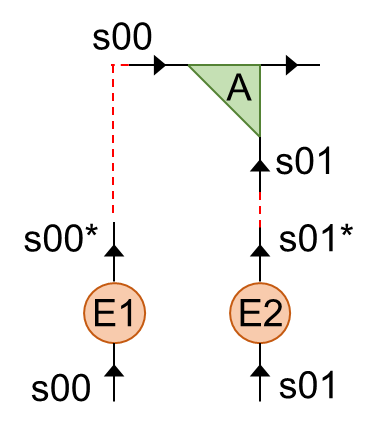
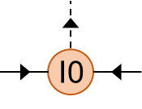
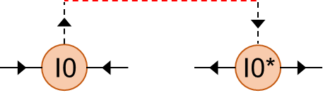

Get to Know QSpace
Author: Seung-Sup Lee
QSpace is a powerful tensor network library developed by Andreas Weichselbaum, a long-term colleague of our group. This library enables the generation and manipulation of tensors that respect general Abelian and non-Abelian symmetries. It consists of many MATLAB functions (.m), as well as MEX functions (.mexa64 or .mexamaci64) that are binary files written in C++. These MEX functions are used for computationally demanding jobs, such as contraction and eigendecomposition. Thus using the QSpace library can be more efficient, even without exploiting symmetries, than the bare MATLAB code!
The goal of this tutorial is to provide the practical knowledge on using the QSpace library and understanding QSpace objects. For the details of physical and mathematical concepts (e.g., IROP, IREP), please refer to A. Weichselbaum, Ann. Phys. 327, 2972 (2012) and A. Weichselbaum, Phys. Rev. Research 2, 023385 (2020).
Clebsch-Gordan coefficient data
The key idea of QSpace is to decompose the tensor into two parts, Clebsch-Gordan coefficients and reduced matrix elements, and to treat them separately. The reduced matrix elements may change depending on the system parameters, while the Clebsch-Gordan coefficients are generic. For example, two spin-1/2's should be always combined anti-symmetrically to make the spin singlet, independent of system parameters. So, once the coefficients are generated, they can be recycled for the next calculations.
In this regard, the QSpace library generates Clebsch-Gordan coefficient data on the fly, e.g., when tensors are manipulated. The Clebsch-Gordan coefficients are tensors by themselves, and stored in a disk drive. The path to the directory in which the data is stored is saved as a MATLAB environment variable (not a shell variable) RC_STORE. To see the path, type in the MATLAB Command Window:
ans =
'/Users/S.Lee/data/RCStore'
startup.mwhich we provided automatically sets the path and creates the corresponding directory, if not exists.
The Clebsch-Gordan data generated on the fly are indexed depending on their order of appearance. Therefore, it is possible that the same Clebsch-Gordan coefficients are indexed differently, or vice versa. So manipulating (e.g., contracting) one QSpace object generated from the calculation on one machine and another QSpace objected generated from the other calculation on the other machine can lead to the inconsistency of the Clebsch-Gordan coefficients. Therefore, it is advised to generate large enough set of the Clebsch-Gordan data and use the data set for different calculations. However, for the tutorial here, this is not important: The Clebsch-Gordan coefficients relevant to this tutorial can be generated from scratch with very small computational cost.
Generate local operators
The first step of using QSpace is to identify which symmetries in the system are to be exploited. Then we generate the tensors that respect such symmetries. The tensors for a local space (e.g., one lattice site) are generated by getLocalSpace. For example, we obtain the operators that act on a spin-1/2 site and respect SU(2) spin symmetry:
S =
Q: 1x [1 1 1] having 'SU2', operator, { , * , * }
data: 3-D double (112 bytes) 1 x 1 x 1 => 2 x 2 x 3
1. 1x1x1 | 2x2x3 [ 1 ; 1 ; 2 ] -1.225
I = struct with fields:
Sloc: 0.5000
SOP: [1x1 struct]
sym: 'SpinS'
U: [2x2 double]
Is: [1x1 struct]
E: [1x1 QSpace]
Q: 1x [1 1] having 'SU2', { , * }
data: 2-D double (112 bytes) 1 x 1 => 2 x 2
1. 1x1 | 2x2 [ 1 ; 1 ] 1. {1.414}
Meaning of the displayed information will be explained in the next section.
On the other hand, the operators for one spinful fermionic site, which respect U(1) charge and SU(2) spin symmetries, are generated by:
Here 'FermionS' means spinful fermion, 'Acharge,SU2spin' means U(1) charge (A from Abelian) and SU(2) spin symmetries, and 'NC',1' means that there is only one channel (NC from number of channels).
F =Q: 2x [2 2 2] having 'A,SU2', operator { , * , * }
data: 3-D double (224 bytes) 2 x 2 x 1 => 3 x 3 x 2
1. 1x1x1 | 1x2x2 [ -1 0 ; 0 1 ; -1 1 ] -1.414
2. 1x1x1 | 2x1x2 [ 0 1 ; 1 0 ; -1 1 ] -1.414 Z =
Q: 3x [2 2] having 'A,SU2', { , * }
data: 2-D double (336 bytes) 3 x 3 => 4 x 4
1. 1x1 | 1x1 [ -1 0 ; -1 0 ] 1
2. 1x1 | 2x2 [ 0 1 ; 0 1 ] -1 (1.414) 3. 1x1 | 1x1 [ 1 0 ; 1 0 ] 1
S =
Q: 1x [2 2 2] having 'A,SU2', operator, { , * , * }
data: 3-D double (112 bytes) 1 x 1 x 1 => 2 x 2 x 3
1. 1x1x1 | 2x2x3 [ 0 1 ; 0 1 ; 0 2 ] -1.225
ans =
Q: 3x [2 2] having 'A,SU2', { , * }
data: 2-D double (336 bytes) 3 x 3 => 4 x 4
1. 1x1 | 1x1 [ -1 0 ; -1 0 ] 1
2. 1x1 | 2x2 [ 0 1 ; 0 1 ] 1 (1.414)
3. 1x1 | 1x1 [ 1 0 ; 1 0 ] 1
F and S are rank-3 tensors, since they change charge and spin quantum numbers. On the other hand, Zand I.E are rank-2 tensors, since they do not change quantum numbers; that is, they are scalars in terms of the Clebsch-Gordan coefficients.
getLocalSpace can deal with general situations. For details, type in the MATLAB command window: 'help getLocalSpace'.
Differences from the TN tutorial materials
Careful readers might have realized that the syntax of getLocalSpace here is similar to that of TN/Tensor/getLocalSpace which has been used for the previous tutorials. Actually, the TN tutorial materials are designed to be consistent with the syntax convention of the QSpace library. Here by TN, I mean the tutorial materials that we have used so far during the course, whose computational routines are pure MATLAB .m files.
There are, however, a few differences between the conventions of TN and QSpace that need to be kept in mind.
1. The last output I of getLocalSpace in the TN material is the identity operator, while I from the QSpace function is the struct variable that contains the identity operator.
2. The leg order convention is different. For the rank-2 tensors (e.g., identity I and fermion sign Z), the convention is the same as in the TN material.
The numbers attached to the legs are the order of legs. The first (bottom) and second (top) legs are to be contracted with bra and ket states, respectively. On the other hand, the QSpace convention for the rank-3 tensors (e.g., fermion annihilation F and spin S) generated by getLocalSpace is different:

Here the first and second legs have the same roles as for the rank-2 tensors, while the third leg indicates the nature of operator (e.g., spin-raising, annihilating particle of a specific spin at a specific channel). In the TN convention, the top leg is at the third place and the operator leg is at the second place.
While the TN convention is better compatible with covariant formulation of tensors, the QSpace convention has practical advantage. Typically, the bottom and top legs of tensors can involve large dimensions. For example, consider a situation when we compute correlator of two operators acting on different sites in a one-dimensional system. We should contract the bra and ket tensors and the local operators iteratively, all the way from one site to the other. At each iteration, the dimensions of the bottom and top legs are bond dimensions, while the operator leg has small dimensions (e.g., 1 for a single spin-\(z\) operator and 3 for a full spin operator). Practically, it is better to place the legs of the largest dimensions to the front; then in most cases the tensors are matrices, not multi-dimensional arrays.
3. The leg directions are incorporated in QSpace objects, while the leg directions are rather bookkeeping in the TN materials. The tensors in the TN materials are just matrices or multi-dimensional arrays that cannot bring the information of leg directions. On the other hand, since the legs of QSpace objects are associated with quantum numbers, the directions of legs (inward or outward) are crucial.
Understand QSpace objects
Let me explain how to interpret the displayed information, with the example of identity operator I.E and particle annihilation operator F.
Q: 3x [2 2] having 'A,SU2', { , * }
data: 2-D double (336 bytes) 3 x 3 => 4 x 4
1. 1x1 | 1x1 [ -1 0 ; -1 0 ] 1
2. 1x1 | 2x2 [ 0 1 ; 0 1 ] 1 {1.414}
3. 1x1 | 1x1 [ 1 0 ; 1 0 ] 1
The identity operator I.E shows that there are three symmetry sectors: [-1 0] is for empty state (no charge, no spin), [0 1] is for singly occupied doublets (one charge, total spin 1/2; doublet means for two states \(S_z =\pm 1/2\)), and [1 0] is for doubly occupied state (two charges, total spin 0; the doubly occupied state for a single orbital should be spin singlet, due to Pauli exclusion principle).
F =Q: 2x [2 2 2] having 'A,SU2', operator { , * , * }
data: 3-D double (224 bytes) 2 x 2 x 1 => 3 x 3 x 2
1. 1x1x1 | 1x2x2 [ -1 0 ; 0 1; -1 1 ] -1.414
2. 1x1x1 | 2x1x2 [ 0 1 ; 1 0; -1 1 ] -1.414
From top left to bottom right:
- Q: 2x [2 2 2] : first 2x means that there are two symmetry sectors. [2 2 2] means that there are three legs (so three 2's) and each leg has two quantum numbers (so 2 each).
- having 'A,SU2' : two quantum numbers are for U(1) (Abelian, so A) and SU(2) symmetries, respectively.
- operator: FF is an operator with three legs.
- {, * , * } : itag (index tag) for each leg. The itag indcates the name and the direction of legs. Here the names are not given (since it is just generated from getLocalSpace), while indicating the directions. Empty for the first leg means inward, and * for the second and third legs means outward. See the next sections for the detail of itags.
- data: 3-D double (240 bytes): the data sector (i.e. reduced matrix elements) are three-dimensional array (since FF is rank-3), and occupies 240 bytes.
- 2 x 2 x 1 : Hilbert space dimension, in terms of symmetry multiplets. It means that there are 2, 2, and 1 multiplets for the first, second, and third legs, respectively.
- 3 x 3 x 2 : Hilbert space dimension, in terms of bare states (not multiplets). It means that there are 3, 3, and 2 states for the first, second, and third legs, respectively.
- 1. 1x1x1 | 1x2x2: The first symmetry sector (so 1.) has the reduced matrix elements as 1x1x1 array in the multiplet basis. And a single multiplet representing the sector has multiplet dimension 1x2x2, that is, the multiplet corresponds to one state for the first leg and two states for the second and third legs, respectively.
- [ -1 0 ; 0 1; -1 1 ] : Quantum numbers for each symmetry sector. Each chunk separated by ; indicates the quantum number for each leg. As we used 'Acharge,SU2spin' option for getLocalSpace, the first number for each chunk is the charge quantum number (number of charges with respect to half filling) and the second number is the spin quantum number (total spin multiplied by 2). So we see that, for this first symmetry sector, the first leg space has no charge (charge quantum number -1, since half filling has one charge), and no spin (spin quantum number 0). And the second leg space has one charge (charge quantum number 0) and total spin 1/2 (spin quantum number 1). Finally the quantum number [-1 1] of the third chunk shows how the operator FF changes quantum number; it decreases charge quantum number by 1 (since it is an annihilation operator) and it is indeed a spinor of total spin 1/2 (spin quantum number is the total spin multiplied by 2)
- -1.414 : It is the reduced matrix element for the first symmetry sector.
Access data in QSpace objects
The information of QSpace objects can be accessed in a similar way as for struct variables. The quantum numbers of F are accessed by:
ans = 1x3 cell
| 1 | 2 | 3 | |
|---|---|---|---|
| 1 | [-1,0;0,1] | [0,1;1,0] | [-1,1;-1...] |
-1 0
0 1
ans = 2x2
0 1
1 0
ans = 2x2
-1 1
-1 1
A m-th row of F.Q{n} indicates the quantum number of the m-th symmetry sector for the n-th leg space.
The reduced matrix elements are accessed by:
ans = 2x1 cell
| 1 | |
|---|---|
| 1 | -1.4142 |
| 2 | -1.4142 |
F2 =
Q: 2x [2 2 2] having 'A,SU2', operator { , * , * }
data: 3-D double (224 bytes) 2 x 2 x 1 => 3 x 3 x 2
1. 1x1x1 | 1x2x2 [ -1 0 ; 0 1; -1 1 ] 10.
2. 1x1x1 | 2x1x2 [ 0 1 ; 1 0; -1 1 ] -1.414
Also we can set and edit the itags (index tags). The itags are saved as the cell array .info.itags. Each cell element is a char array, which should be consistent with the direction of each leg. When the itag of a leg ends with , it means that the leg is outward. Otherwise, the leg is inward. Since the original direction was in-out-out, the first itag should not include and the second and third itags should end with *.
F2 =Q: 2x [2 2 2] having 'A,SU2', operator { s00, s00 , op }
data: 3-D double (224 bytes) 2 x 2 x 1 => 3 x 3 x 2
1. 1x1x1 | 1x2x2 [ -1 0 ; 0 1; -1 1 ] 10.
2. 1x1x1 | 2x1x2 [ 0 1 ; 1 0; -1 1 ] -1.414
Here the name of the space, s00, for the first and second legs means that the legs act on the space of the local site s00. And the name op for the third leg means that it indicates the nature of the operator, not acting on the physical space.
One can try to set the itags to be inconsistent with the original itags. Then the QSpace library detects the inconsistency in the data and gives error message.
F2 =Q: 2x [2 2 2] having 'A,SU2', operator { s00, s00 , op* }
./clebsch.cc:3605 15:29:54 ERR init() got CGR QSet mismatch ./clebsch.cc:3605 15:29:54 ERR U(1) (-1,0,-1) <> U(1)
The itags are really useful when we treat many tensors at the same time. For example, when many tensors are contracted sequentially (as in TN/Tensor/updateLeft), tracking down the leg order at each contraction step is quite tedious job, and is often the source of bug, if one makes a mistake in counting the leg order. By using itags, however, the QSpace library performs the sanity check for the compatibility of legs, and enables the contraction multiple tensors/legs with simple syntax!
We emphasize that one can directly edit only the reduced matrix elements (.data) and itags (.info.itags) of QSpace objects. Tinkering any other part of QSpace object may break the consistency of data; and the QSpace library detects such consistency, as you see from the above example of wrong itags.
Basic operations
QSpace library provides an efficient way of manipulating the tensors, in a similar way as the standard numerical arrays of MATLAB.
First, one can generate the array of empty QSpace objects, similarly as zeros.
M = (empty QSpace) M = (empty QSpace)...
M(3) = (empty QSpace) ans = 1x2
3 1
And we can add and subtract QSpace objects.
Z =Q: 3x [2 2] having 'A,SU2', { , * }
data: 2-D double (336 bytes) 3 x 3 => 4 x 4
1. 1x1 | 1x1 [ -1 0 ; -1 0 ] 1.
2. 1x1 | 2x2 [ 0 1 ; 0 1 ] -1.
3. 1x1 | 1x1 [ 1 0 ; 1 0 ] -1.
ans =
Q: 3x [2 2] having 'A,SU2', { , * }
data: 2-D double (336 bytes) 3 x 3 => 4 x 4
1. 1x1 | 1x1 [ -1 0 ; -1 0 ] 2.
2. 1x1 | 2x2 [ 0 1 ; 0 1 ] 0. {1.414}
3. 1x1 | 1x1 [ 1 0 ; 1 0 ] 2.
ans =
Q: 3x [2 2] having 'A,SU2', { , * }
data: 2-D double (336 bytes) 3 x 3 => 4 x 4
1. 1x1 | 1x1 [ -1 0 ; -1 0 ] 0.
2. 1x1 | 2x2 [ 0 1 ; 0 1 ] -2. {1.414}
3. 1x1 | 1x1 [ 1 0 ; 1 0 ] 0.
Multiply a number to QSpace object.
ans =Q: 3x [2 2] having 'A,SU2', { , * }
data: 2-D double (336 bytes) 3 x 3 => 4 x 4
1. 1x1 | 1x1 [ -1 0 ; -1 0 ] 3.
2. 1x1 | 2x2 [ 0 1 ; 0 1 ] -3. {1.414}
3. 1x1 | 1x1 [ 1 0 ; 1 0 ] 3.
Take complex conjugation.
F =
Q: 2x [2 2 2] having 'A,SU2', operator, { , *, * }
data: 3-D double (224 bytes) 2 x 2 x 1 => 3 x 3 x 2
1. 1x1x1 | 1x2x2 [ -1 0 ; -1 0 ; -1 1 ] -1.414.
2. 1x1x1 | 2x1x2 [ 0 1 ; 1 0 ; -1 1 ] -1.414.
Q: 2x [2 2 2] having 'A,SU2', operator, { *, , }
data: 3-D double (224 bytes) 2 x 2 x 1 => 3 x 3 x 2
1. 1x1x1 | 1x2x2 [ -1 0 ; 0 1 ; -1 1 ] -1.414.
2. 1x1x1 | 2x1x2 [ 0 1 ; 1 0 ; -1 1 ] -1.414.
ans =
Q: 2x [2 2 2] having 'A,SU2', operator, { *, , } complex
data: 3-D double (232 bytes) 2 x 2 x 1 => 3 x 3 x 2
1. 1x1x1 | 1x2x2 [ -1 0 ; 0 1 ; -1 1 ] -1i
2. 1x1x1 | 2x1x2 [ 0 1 ; 1 0 ; -1 1 ] -1.414
We see that the complex conjugation of QSpace object flips all the leg directions (inward vs. outward) and takes the complex conjugate to the reduced matrix elements (numerical arrays in .data{..}).
The permutation of the legs can be done by permute, which is the wrap-up routine for the binary MEX function permuteQS.
ans =
Q: 2x [2 2 2] having 'A,SU2', operator, { * , ,* }
data: 3-D double (224 bytes) 2 x 2 x 1 => 3 x 3 x 2
1. 1x1x1 | 2x1x2 [ 0 1 ; -1 0 ; -1 1 ] -1.414
2. 1x1x1 | 1x2x2 [ 1 0 ; 0 1 ; -1 1 ] -1.414
Q: 2x [2 2 2] having 'A,SU2', operator, { * , ,* }
data: 3-D double (224 bytes) 2 x 2 x 1 => 3 x 3 x 2
1. 1x1x1 | 2x1x2 [ 0 1 ; -1 0 ; -1 1 ] -1.414
2. 1x1x1 | 1x2x2 [ 1 0 ; 0 1 ; -1 1 ] -1.414
Also the complex conjugation can be done together with permutation, by setting the option 'conj' in the syntax of permute. Then the Hermitian conjugate, which is the combination of the complex conjugate and transpose, to the particle annihilation operator F is obtained by:
ans =Q: 2x [2 2 2] having 'A,SU2', operator, { , *, }
data: 3-D double (224 bytes) 2 x 2 x 1 => 3 x 3 x 2
1. 1x1x1 | 2x1x2 [ 0 1 ; -1 0 ; -1 1 ] -1.414
2. 1x1x1 | 1x2x2 [ 1 0 ; 0 1 ; -1 1 ] -1.414
ans =
Q: 2x [2 2 2] having 'A,SU2', operator, { , *, }
data: 3-D double (224 bytes) 2 x 2 x 1 => 3 x 3 x 2
1. 1x1x1 | 2x1x2 [ 0 1 ; -1 0 ; -1 1 ] -1.414
2. 1x1x1 | 1x2x2 [ 1 0 ; 0 1 ; -1 1 ] -1.414
That is, it becomes the particle creation operator. The tensor network diagram for this is:

The Hermitian conjugation for rank-2 operator is:
ans =Q: 3x [2 2] having 'A,SU2', { , * }
data: 2-D double (336 bytes) 3 x 3 => 4 x 4
1. 1x1 | 1x1 [ -1 0 ; -1 0 ] -1.
2. 1x1 | 2x2 [ 0 1 ; 0 1 ] -1. {-1.414}
3. 1x1 | 1x1 [ 1 0 ; 1 0 ] -1.
We see that the identity operator is Hermtian:
ans =Q: 3x [2 2] having 'A,SU2', { , * }
data: 2-D double (336 bytes) 3 x 3 => 4 x 4
1. 1x1 | 1x1 [ -1 0 ; -1 0 ] 0.
2. 1x1 | 2x2 [ 0 1 ; 0 1 ] 0. {-1.414}
3. 1x1 | 1x1 [ 1 0 ; 1 0 ] 0.
Interestingly, the wrap-up function has the same name as the MATLAB bulit-in permute. Will it be a problem? Answer is no. MATLAB finds and executes a proper routine depending on the type of input variables. When it detects QSpace objects as input, it calls the routine QSpace/Class/@QSpace/permute which is the wrap-up of the MEX function QSpace/bin/permuteQS .
/Users/S.Lee/Documents/MATLAB/QSpace_v3/Class/@QSpace/permute.m % QSpace methodOn the other hand, if we give a numeric array, then MATLAB calls the built-in function.
built-in (/Applications/MATLAB_R220a.app/toolbox/matlab/elmat/@double/permute) % double method ans = 2 x 21 3
2 4
To see the documentations for MEX functions (which are binary files stored in QSpace/bin), type in the MATLAB Command Window:
>>Name_of_MEX_function -?
For example, for permuteQS, type:
Usage: A = permuteQS(A, P [,'conj'])
permute input QSpace using given permutation P.
Optional trailing 'conj' also applies (complex) conjugation
(note that this also affects real QSpaces in that qdir and
itags are altered!).
For convenience, P[,'conj'] may also be represented as
single string, e.e. [2 1],'conj' is equivalent to '2,1;'
or '21' where the convention on string notation
follows that of contraction indices [ctrIdx]
NB! [06/02/2019] the provided permutation can be shorter
than the rank of the QSpace; in this case it only affects the
leading range of indices, i.e., acts like an identity
on the remainder of indices.
AW (C) Aug 2006 ; May 2010 ; Oct 2014
Select subspace
We can select part of symmetry sectors, by using getsub.
ans =
Q: 3x [2 2] having 'A,SU2', { , * }
data: 2-D double (336 bytes) 3 x 3 => 4 x 4
1. 1x1 | 1x1 [ -1 0 ; -1 0 ] 1.
2. 1x1 | 2x2 [ 0 1 ; 0 1 ] 1. {-1.414}
3. 1x1 | 1x1 [ 1 0 ; 1 0 ] 1.
ans =
Q: 1x [2 2] having 'A,SU2', { , * }
data: 2-D double (112 bytes) 1 x 1 => 2 x 2
1. 1x1 | 2x2 [ 0 1 ; 0 1 ] 1. {-1.414}
Q: 2x [2 2] having 'A,SU2', { , * }
data: 2-D double (224 bytes) 2 x 2 => 2 x 2
1. 1x1 | 1x1 [ -1 0 ; -1 0 ] 1.
1. 1x1 | 1x1 [ 1 0 ; 1 0 ] 1.
To choose the sectors of specific quantum numbers, we can combine getsub, find, and ismember (the latter two are MATLAB built-ins.)
ans =Q: 1x [2 2] having 'A,SU2', { , * }
data: 2-D double (112 bytes) 1 x 1 => 2 x 2
1. 1x1 | 2x2 [ 0 1 ; 0 1 ] 1. {1.414}
It can be done also with all and bsxfun.
ans =Q: 1x [2 2] having 'A,SU2', { , * }
data: 2-D double (112 bytes) 1 x 1 => 2 x 2
1. 1x1 | 2x2 [ 0 1 ; 0 1 ] 1. {1.414}
Contraction
The contraction of tensors can be done by contract (which is the wrap-up of MEX function contractQS). By exploiting symmetries, the contraction of QSpace objects is done for every symmetry sectors. Only the sectors of two tensors, whose quantum numbers are identical, are to be contracted. And the QSpace library automatically and seamlessly treats the contraction of the Clebsch-Gordan coefficients; we users need to only care about reduced matrix elements.
For example, the particle number operator \(\hat{n} =\sum_{\sigma } {\hat{f} }_{\sigma }^{\dagger } {\hat{f} }_{\sigma }\) can be obtained by:
NF =Q: 2x [2 2] having 'A,SU2', { , * }
data: 2-D double (224 bytes) 2 x 2 => 3 x 3
1. 1x1 | 2x2 [ 0 1 ; 0 1 ] 1. {1.414}
2. 1x1 | 1x1 [ 1 0 ; 1 0 ] 2.
We see that the sector of quantum number [0 1]has one particle (see .data{1} is 1) and the sector of [1 0] has two (see .data{2} is 2).
In the usage of contract, * at the end of the second input '1,3;*'means that the first input F is complex conjugated before contraction. And '1,3' in the second and fourth inputs mean that the first legs ('1' and '1' each) and the third legs ('3' and '3'each) are contracted, respectively. The tensor network diagram for this is:

Here F* means the complex conjugate to F.
By using itags, the contraction can be made simpler. For example, the number operator can be obtained by:
NF =Q: 2x [2 2] having 'A,SU2', { s00, s00* }
data: 2-D double (224 bytes) 2 x 2 => 3 x 3
1. 1x1 | 2x2 [ 0 1 ; 0 1 ] 1. {1.414}
2. 1x1 | 1x1 [ 1 0 ; 1 0 ] 2.
In the usage of contract here, '*' at the end of the second input '!2*' means that the first input F is complex conjugated, and '!2' in the second input means that all the legs of the first input except the second leg are contracted to the legs of the third input, as long as their itags match. Only the pair of outward leg (e.g., with itag 's00*') and inward leg (e.g., with itag 's00') of the same name can be contracted.** Here, the first legs and the third legs have compatible itags, so they are contracted.
Also, the contract function supports multiple contractions in a single line syntax. For example, the squared number operator \(\sum_{\sigma \sigma^{\prime } } {\hat{f} }_{\sigma }^{\dagger } {\hat{f} }_{\sigma } {\hat{f} }_{\sigma^{\prime } }^{\dagger } {\hat{f} }_{\sigma^{\prime } }\) can be obtained by:
N2 =
Q: 2x [2 2] having 'A,SU2', { s00, s00* }
data: 2-D double (224 bytes) 2 x 2 => 3 x 3
1. 1x1 | 2x2 [ 0 1 ; 0 1 ] 1. {1.414}
2. 1x1 | 1x1 [ 1 0 ; 1 0 ] 4.
In such syntax, the contraction inside the inner-most parenthesis { } is performed first, and then the contraction for the next inner-most parenthesis is done, and so on. In the above example, the parenthesis are given so that the contraction is performed over two right-most tensors, and contract the left ones iteratively. For details, type:
>> contractQS -?
Rank-2 tensors
Rank-2 tensors are of the simplest type. (Quick exercise: Why not rank-1?) They are scalar in terms of Clebsch-Gordan coefficients and there is no (outer) multiplicity of symmetry sectors. And their reduced matrix elements form matrices.
So the QSpace library enables to treat rank-2 QSpace objects, in a way that usual matrices are treated by MATLAB built-in functions.
ans =
Q: 3x [2 2] having 'A,SU2', { *, }
data: 2-D double (336 bytes) 3 x 3 => 4 x 4
1. 1x1 | 1x1 [ -1 0 ; -1 0 ] 1.
2. 1x1 | 2x2 [ 0 1 ; 0 1 ] -1. {1.414}
3. 1x1 | 1x1 [ 1 0 ; 1 0 ] 1.
ans =
Q: 3x [2 2] having 'A,SU2', { *, }
data: 2-D double (336 bytes) 3 x 3 => 4 x 4
1. 1x1 | 1x1 [ -1 0 ; -1 0 ] 1.
2. 1x1 | 2x2 [ 0 1 ; 0 1 ] -1. {1.414}
3. 1x1 | 1x1 [ 1 0 ; 1 0 ] 1.
Q: 3x [2 2] having 'A,SU2', { *, }
data: 2-D double (336 bytes) 3 x 3 => 4 x 4
1. 1x1 | 1x1 [ -1 0 ; -1 0 ] 0.
2. 1x1 | 2x2 [ 0 1 ; 0 1 ] 0. {1.414}
3. 1x1 | 1x1 [ 1 0 ; 1 0 ] 0.
ans =
Q: 3x [2 2] having 'A,SU2', { *, }
data: 2-D double (336 bytes) 3 x 3 => 4 x 4
1. 1x1 | 1x1 [ -1 0 ; -1 0 ] 1.
2. 1x1 | 2x2 [ 0 1 ; 0 1 ] -1. {1.414}
3. 1x1 | 1x1 [ 1 0 ; 1 0 ] 1.
As in the case of permute explained above, MATLAB can execute different functions depending on the type of inputs. That is, there are several QSpace functions that override the MATLAB built-in functions.
This simplification also works for some rank-3 tensors (whose .info.otype is set as 'operator'').
ans =
Q: 2x [2 2 2] having 'A,SU2', operator, { , *, }
data: 3-D double (224 bytes) 2 x 2 x 1 => 3 x 3 x 2
1. 1x1x1 | 2x1x2 [ 0 1 ; -1 0 ; -1 1 ] -1.414
2. 1x1x1 | 1x2x2 [ 1 0 ; 0 1 ; -1 1 ] -1.414
However, it is advisable to use permute and contract in general, to avoid any mistake.
Vacuum space
The left end and the right end of the matrix product states (MPS) are dummy legs of dimension 1. These dummy legs are introduced to represent all the constituent tensors (so-called A and B tensors) as being rank-3. Thus the dummy legs point to the space which has nothing, i.e., vacuum. The vacuum space carries no quantum number at all, and it is different from the empty state which has specific quantum number. The vacuum space for given set of symmetries is obtained by using getvac:
ans =Q: 1x [2 2] having 'A,SU2', { , * }
data: 2-D double (112 bytes) 1 x 1 => 1 x 1
1. 1x1 | 1x1 [ 0 0 ; 0 0 ] 1.
Generate identity operators and isometries
We can obtain identity operators and isometries by using getIdentity(which is the wrap-up of MEX function getIdentityQS). There are three contexts of using getIdentity.
1. Obtain the identity operator for a given leg space.
For example, the following provides the identity operator for the Hilbert space of the second leg of F.
FE2 =
Q: 2x [2 2] having 'A,SU2', { , * }
data: 2-D double (224 bytes) 2 x 2 => 3 x 3
1. 1x1 | 2x2 [ 0 1 ; 0 1 ] 1. {1.414}
2. 1x1 | 1x1 [ 1 0 ; 1 0 ] 1.
Note that FE2 is different from the identity operator I.E that is for the whole Hilbert space of a spinful fermionic site, since FE2 does not contain the subspace in which there is no particle (with quantum number [-1 0]).
ans =
Q: 3x [2 2] having 'A,SU2', { , * }
data: 2-D double (336 bytes) 3 x 3 => 4 x 4
1. 1x1 | 2x2 [ -1 0 ; -1 0 ] 1.
2. 1x1 | 1x1 [ 0 1 ; 0 1 ] -2.22e-16 {1.414}
3. 1x1 | 1x1 [ 1 0 ; 1 0 ] 0.
2. Generate the isometry that combines the spaces of two legs.
Let's create the isometry (so-called A tensors) which combines two local spaces (each of which spans for a spinful fermionic site) to span the product space. In this case, to distinguish different local spaces, it is advised to use itags.
E1 = I.E;
E1.info.itags = { 's00', 's00*'};
E2 = I.E;
E2.info.itags = { 's01', 's01*'};
A = getIdentity(E1,2,E2,2)
A =
Q: 10x [2 2 1] having 'A,SU2', A-matrix, { s00, s01, * }
data: 3-D double (1200 bytes) 3 x 3 x 10 => 4 x 4 x 16
1. 1x1x1 | 1x1x1 [ -1 0 ; -1 0 ; -2 0 ] 1.
2. 1x1x2 | 1x2x2 [ -1 0 ; 0 1 ; -1 1 ] 16 B
3. 1x1x2 | 2x1x2 [ 0 1 ; -1 0 ; -1 1 ] 16 B
4. 1x1x3 | 1x1x1 [ -1 0 ; 1 0 ; 0 0 ] 24 B
5. 1x1x3 | 2x2x1 [ 0 1 ; 0 1 ; 0 0 ] 24 B
6. 1x1x3 | 1x1x1 [ 1 0 ; -1 0 ; 0 0 ] 24 B
7. 1x1x1 | 2x2x3 [ 0 1 ; 0 1 ; 0 2 ] 1.732
8. 1x1x2 | 2x1x2 [ 0 1 ; 1 0 ; 1 1 ] 16 B
9. 1x1x2 | 1x2x2 [ 1 0 ; 0 1 ; 1 1 ] 16 B
10. 1x1x1 | 1x1x1 [ 1 0 ; 1 0 ; 2 0 ] 1.
The corresponding diagram is:

This isometry is left-normalized. (Quick exercise: check this!) Such isometries are the building blocks of the MPS.
In the lecture course, the convention for ordering the legs of isometries is left-bottom-right, as A is so here. However, many functions and programs in and based on the QSpace library use different convention: left-right-bottom. The same reason, explained in the previous section on the convention differences, applies here as well. Typically the left and right legs have the largest dimensions, while the bottom leg acts on low-dimensional local space. So placing the left and right legs before the bottom leg is more practical.
getIdentity also supports (i) setting the itag for a newly generated leg spanning the product space and (ii) permuting legs in a single line.
A =
Q: 10x [2 2 1] having 'A,SU2', A-matrix, { s00, A01*, s01 }
data: 3-D double (1200 bytes) 3 x 3 x 10 => 4 x 4 x 16
1. 1x1x1 | 1x1x1 [ -1 0 ; -2 0 ; -1 0 ] 1.
2. 1x2x1 | 1x2x2 [ -1 0 ; -1 1 ; 0 1 ] 16 B
3. 1x2x1 | 2x2x1 [ 0 1 ; -1 1 ; -1 0 ] 16 B
4. 1x3x1 | 1x1x1 [ -1 0 ; 0 0 ; 1 0 ] 24 B
5. 1x3x1 | 2x1x2 [ 0 1 ; 0 0 ; 0 1 ] 24 B
6. 1x3x1 | 1x1x1 [ 1 0 ; 0 0 ; -1 0 ] 24 B
7. 1x1x1 | 2x3x2 [ 0 1 ; 0 2 ; 0 1 ] 1.732
8. 1x2x1 | 2x2x1 [ 0 1 ; 1 1 ; 1 0 ] 16 B
9. 1x2x1 | 1x2x2 [ 1 0 ; 1 1 ; 0 1 ] 16 B
10. 1x1x1 | 1x1x1 [ 1 0 ; 2 0 ; 1 0 ] 1.
Here the 5th input is the itag, and the 6th input is the permutation indices.
3. Generate a \(1j\) symbol to invert the direction of the legs.
As we have learned from the lecture, it is crucial to flip the leg directions to bring the MPS into different canonical forms (see the material for Tutorial T02a). While inverting leg directions was of mere bookkeeping purpose in the TN materials, it should be performed explicitly for the QSpace objects.
For example, let's invert the third leg of particle annihilation operator.
F1 =
Q: 2x [2 2 2] having 'A,SU2', operator, { s00, s00*, op* }
data: 3-D double (224 bytes) 2 x 2 x 1 => 3 x 3 x 2
1. 1x1x1 | 1x2x2 [ -1 0 ; 0 1 ; -1 1 ] -1.414
2. 1x1x1 | 2x1x2 [ 0 1 ; 1 0 ; -1 1 ] -1.414
I0 =
Q: 1x [2 2] having 'A,SU2', { op, op }
data: 2-D double (112 bytes) 1 x 1 => 2 x 2
1. 1x1 | 2x2 [ -1 1 ; 1 1 ] 1. {1.414}
The generated operator I' is rank-2, and has all-in legs. By looking at the quantum numbers associated with the third leg of F1, we see that the first leg of I0 corresponds the third leg of F1. The tensor network diagram for I0 is:

Here the left and right legs in solid lines are the first and second legs, respectively.
In this diagram, we see an implicit leg drawn in dashed line, which does not appear in the display information above. This implicit leg carries all zero quantum numbers since the sum of the quantum numbers of incoming legs should be the same as the sum of those of outgoing legs (i.e., Kirchoff's law for quantum numbers). Note that the second quantum number is spin quantum number (multiplied by 2) associated with the SU(2) symmetry, and the spin quantum number for the implicit leg is zero (which means spin singlet). In other words, the Hilbert space for this implicit leg is vacuum; that's why the leg does not show up explicitly in the numerical object.
In the space of explicit legs, the \(1j\) symbol behaves as unitary operation. So the tensor network state on which \(1j\) symbol is acted can differ from the original state. One exception is that the explicit leg to be flipped acts on one-dimensional Hilbert space, where the unitary operation reduces to a single prefactor. Therefore, in general, it is required to consider the pair of \(1j\) symbol and its conjugate. When a \(1j\) symbol is acted, then its conjugate should be introduced at some point. This notion of pair can be understood intuitively by considering implicit legs that need to be contracted at last:

Let's return to the example of inverting the third leg of F1. We invert the leg by contracting the \(1j\) symbol.
F1I =
Q: 2x [2 2 2] having 'A,SU2', { s00, s00*, op }
data: 3-D double (224 bytes) 2 x 2 x 1 => 3 x 3 x 2
1. 1x1x1 | 1x2x2 [ -1 0 ; 0 1 ; 1 1 ] 1.414
2. 1x1x1 | 2x1x2 [ 0 1 ; 1 0 ; 1 1 ] -1.414
The resulting F1I is also an annihilation operator, but it has the inward third leg.
For details, type: getIdentityQS -?
Automatic truncation of all-zero sectors
The contract (and some other functions) of the QSpace library may remove the sectors whose reduced matrix elements (elements of .data{..}) are all zeros. For example, consider the following case.
[F,Z,S,I] = getLocalSpace( 'FermionS', 'Acharge', 'SU2spin', 'NC',1);
M1 = I.E; M1.info.itags = { 's00', 's00*'};
M2 = I.E; M2.info.itags = { 's01', 's01*'};
A = getIdentity(M1,2,M2,2, 'A01*',[1 3 2]);
contract(A, '!2*',{M1, '!1',{M2, '!1',A}})
A =
Q: 6x [2 2] having 'A,SU2', { A01, A01* }
data: 2-D double (784 bytes) 10 x 10 => 16 x 16
1. 1x1 | 1x1 [ -1 0 ; -2 0 ] 1.
2. 2x2 | 2x2 [ -1 0 ; -1 1 ] 32 B {1.414}
3. 3x3 | 1x1 [ 0 1 ; -1 1 ] 72 B
4. 1x1 | 3x3 [ -1 0 ; 0 0 ] 1. {1.732}
5. 2x2 | 2x2 [ 0 1 ; 0 0 ] 32 B {1.414}
6. 1x1 | 1x1 [ 1 0 ; 0 0 ] 1.
This is the normal contraction of the identity tensors. The result acts on 16-dimensional space of two spinful fermionic sites.
What happens if we replace one sector of A with all-zero reduced matrix elements?
A =Q: 5x [2 2] having 'A,SU2', { A01, A01* }
data: 2-D double (672 bytes) 9 x 9 => 15 x 15
1. 2x2 | 2x2 [ -1 0 ; -2 0 ] 32 B {1.414}
2. 3x3 | 1x1 [ -1 0 ; -1 1 ] 72 B
3. 1x1 | 3x3 [ 0 1 ; -1 1 ] 1. {1.732}
4. 2x2 | 2x2 [ -1 0 ; 0 0 ] 32 B {1.414}
5. 1x1 | 1x1 [ 0 1 ; 0 0 ] 1.
Then we have the sector [-2 0] is missing, and the result acts on 15-dimensional space.
It is an intended feature rather than a bug. When contract tensors over the tensor network, the all-zero sectors in the constituent tensors do not contribute to the result. So the truncation of such all-zero sectors yields better computational efficiency.
However, when we consider the Hamiltonian in effective basis, the Hamiltonian may have the sectors of all zero matrix elements, and such sectors should be kept. All the energy eigenvalues, whether zero or finite, have meaning! For this, we should enforce to keep all-zero sectors. One trick is to add the identity operator, multiplied by very small number smaller than double precision (e.g., \(10^{-30}\)), to the Hamiltonian. Such small number should not change the physical results, but prevents unwanted truncation.
Eigendecomposition
Let's construct the hopping term \(\sum_{\sigma } {\hat{f} }_{2\sigma }^{\dagger } {\hat{f} }_{1\sigma } +{\hat{f} }_{1\sigma }^{\dagger } {\hat{f} }_{2\sigma }\) acting on two spinful fermionic sites.
% for site s00
F1 = F; F1.info.itags = { 's00', 's00*', 'op*'};
E1 = I.E; E1.info.itags = { 's00', 's00*'};
% for site s01
F2 = F; F2.info.itags = { 's01', 's01*', 'op*'};
E2 = I.E; E2.info.itags = { 's01', 's01*'};
Z2 = Z; Z2.info.itags = { 's01', 's01*'};
A = getIdentity(E1,2,E2,2, 'A01*',[1 3 2]);
H = contract(A, '!2*',{F1, '!1',{F2, '!2*',{Z2, '!1',A}}}) + ...
contract(A, '!2*',{F1, '!2*',{Z2, '!1',{F2, '!1',A}}}) + ...
getIdentity(A,2) * 1e-40
The first line of defining H means \(\sum_{\sigma } {\hat{f} }_{2\sigma }^{\dagger } {\hat{f} }_{1\sigma }\), and the second line means its Hermitian conjugate. And in the third line, we added the identity multiplied by a small number, to let H have all the sectors (that amount to 16 dimensional space).
ans{1} =
1.0000e-40
ans{2} =
0.0000 1.0000
1.0000 0.0000
ans{3} =
0.0000 -1.4142 0
-1.4142 0.0000 -1.4142
0 -1.4142 0.0000
ans{4} =
1.0000e-40
ans{5} =
0.0000 -1.0000
-1.0000 0.0000
ans{6} =
1.0000e-40
The eigenvalues and eigenvectors of H can be obtained by eig which is the wrap-up of eigQS.
V =
Q: 6x [2 2] having 'A,SU2', { A01, A01 }
data: 2-D double (784 bytes) 10 x 10 => 16 x 16
1. 1x1 | 1x1 [ -2 0 ; -2 0 ] 1.
2. 2x2 | 2x2 [ -1 1 ; -1 1 ] 32 B {1.414}
3. 3x3 | 1x1 [ 0 0 ; 0 0 ] 72 B
4. 1x1 | 3x3 [ 0 2 ; 0 2 ] 1. {1.732}
5. 2x2 | 2x2 [ 1 1 ; 1 1 ] 32 B {1.414}
6. 1x1 | 1x1 [ 2 0 ; 2 0 ] 1.
D =
Q: 6x [2 2] having 'A,SU2', { A01, A01 }
data: 2-D double (704 bytes) 6 x 10 => 10 x 16
1. 1x1 | 1x2 [ -2 0 ; -2 0 ] 1e-40
2. 2x2 | 2x2 [ -1 1 ; -1 1 ] 16 B {1.414}
3. 1x3 | 1x1 [ 0 0 ; 0 0 ] 24 B
4. 1x1 | 3x3 [ 0 2 ; 0 2 ] 1e-40 {1.732}
5. 1x2 | 2x2 [ 1 1 ; 1 1 ] 16 B {1.414}
6. 1x1 | 1x1 [ 2 0 ; 2 0 ] 1e-40
F and D are QSpace objects. Each data of V is the unitary matrix whose columns are eigenvectors:
ans{1} =
1
ans{2} =
-0.7071 0.7071
0.7071 0.7071
ans{3} =
-0.5000 -0.7071 -0.5000
-0.7071 -0.0000 0.7071
-0.5000 0.7071 -0.5000
ans{4} =
1
ans{5} =
-0.7071 -0.7071
-0.7071 -0.7071
ans{6} =
1
We can check the unitarity of V by
ans = logical
1
Each data of D is the row vector of eigenvalues:
ans{1} =1.0000e-40
ans{2} =
-1.0000 -1.0000
ans{3} =
-2.0000 -0.0000 2.0000
ans{4} =
1.0000e-40
ans{5} =
-1.0000 -1.0000
ans{6} =
1.0000e-40
(Quick exercise: Explain the eigenvalues.)
To make D as an operator representing a diagonal matrix,
V =
Q: 6x [2 2] having 'A,SU2', { A01, A01* }
data: 2-D double (784 bytes) 10 x 10 => 16 x 16
1. 1x1 | 1x1 [ -2 0 ; -2 0 ] 1e-40
2. 2x2 | 2x2 [ -1 1 ; -1 1 ] 32 B {1.414}
3. 3x3 | 1x1 [ 0 0 ; 0 0 ] 72 B
4. 1x1 | 3x3 [ 0 2 ; 0 2 ] 1e-40 {1.732}
5. 2x2 | 2x2 [ 1 1 ; 1 1 ] 32 B {1.414}
6. 1x1 | 1x1 [ 2 0 ; 2 0 ] 1e-40
ans{1} =
1.0000e-40
ans{2} =
-1.0000 0
0 1.0000
ans{3} =
-2.0000 0 0
0 -0.0000 0
0 0 2.0000
ans{4} =
1.0000e-40
ans{5} =
-1.0000 0
0 -1.0000
ans{6} =
1.0000e-40
One may also directly use the original MEX function eigQS.
Note that the syntax is a bit different from the wrap-up eig. E is two-column matrix whose first column is the energy eigenvalues (sorted in ascending order) and second column indicates the multiplet dimensions (i.e., degeneracy due to non-Abelian symmetry) associated with the eigenvalues. When only the Abelian symmetries are used, E becomes a column vector, without having the second column for the multiplet dimensions.
ans = 10x2
-2.0000 1.0000
-1.0000 2.0000
-1.0000 2.0000
-0.0000 1.0000
0.0000 1.0000
0.0000 1.0000
0.0000 3.0000
1.0000 2.0000
1.0000 2.0000
2.0000 1.0000
And Inrg is the struct that contains more result of the eigendecomposition, including the eigenvectors (.AK and .AT) and eigenvalues (.EK and .ET).
ans = struct with fields:AK: [1x1 struct]
AD: [1x1 struct]
EK: [1x1 struct]
ED: [1x1 struct]
DB: [6x2 struct]
NK: 10
Etrunc: 0
Becasue of the MATLAB policy, the direct result of MEX functions should be of MATLAB built-in types, while the QSpace is the user-defined data type. Here .AK, .AT, .EK, and .ET are struct variables that are compatible with QSpace. So we wrap them up as QSpace objects:
ans =Q: 6x [2 2] having 'A,SU2', { A01, A01 }
data: 2-D double (784 bytes) 10 x 10 => 16 x 16
1. 1x1 | 1x1 [ -2 0 ; -2 0 ] 1e-40
2. 2x2 | 2x2 [ -1 1 ; -1 1 ] 32 B {1.414}
3. 3x3 | 1x1 [ 0 0 ; 0 0 ] 72 B
4. 1x1 | 3x3 [ 0 2 ; 0 2 ] 1e-40 {1.732}
5. 2x2 | 2x2 [ 1 1 ; 1 1 ] 32 B {1.414}
6. 1x1 | 1x1 [ 2 0 ; 2 0 ] 1e-40
ans =
Q: 6x [2 2] having 'A,SU2', { A01, A01 }
data: 2-D double (784 bytes) 10 x 10 => 16 x 16
1. 1x1 | 1x1 [ -2 0 ; -2 0 ] 1.
2. 2x2 | 2x2 [ -1 1 ; -1 1 ] 32 B {1.414}
3. 3x3 | 1x1 [ 0 0 ; 0 0 ] 72 B
4. 1x1 | 3x3 [ 0 2 ; 0 2 ] 1. {1.732}
5. 2x2 | 2x2 [ 1 1 ; 1 1 ] 32 B {1.414}
6. 1x1 | 1x1 [ 2 0 ; 2 0 ] 1.
We can set several options for eigQS, such as Nkeep (number of multiplets to be kept) and Etrunc (threshold energy such that the energy eigenvalues below the value are to be kept). For details, type: eigQS -?
Singular value decomposition
We can perform the singular value decomposition (SVD) of QSpace objects, by using MEX function svdQS. The first input to svdQSis a QSpace object whose legs are all in. Indeed, this notion of decomposing all-in tensor is consistent with the diagrammatic expresssion of the Schmidt decomposition.
And the second input is the leg indices. The corresponding legs are to be the legs of the third output Vd for right singular vectors. When non-Abelian symmetry is used, it is allowed to choose only one or \(r-1\) indices, where \(r\) is the rank of the first input. To "split off" different number of legs (to be associated with Vd), we need to fuse the legs by using the isometry generated by getIdentity; then perform the SVD; then split the legs by appling the conjugate of the iseometry used to fuse the legs.
For example, consider an isometry:
[S,I] = getLocalSpace( 'Spin',1/2);
E1 = I.E; E1.info.itags = { 's00', 's00*'};
E2 = I.E; E2.info.itags = { 's01', 's01*'};
A = getIdentity(E1,2,E2,2,'A01*',[1 3 2]);
We need to flip the second leg to perform the SVD.
Then use the svdQS.
As mentioned above, the direct outputs from MEX functions are in the form of struct variables, not as QSpace objects. So we need to wrap them up.
U =Q: 2x [1 1 1] having 'A,SU2', { s00*, A01, s01 }
data: 3-D double (224 bytes) 1 x 2 x 1 => 2 x 4 x 2
1. 1x1x1 | 2x1x2 [ 1 ; 0 ; 1 ] 0.7071
2. 1x1x1 | 2x3x2 [ 1 ; 2 ; 1 ] 1.225
S =
Q: 1x [1 1] having 'A,SU2', { s00, s00 }
data: 2-D double (112 bytes) 1 x 1 => 2 x 2
1. 1x1 | 2x2 [ 1 ; 1 ] -1.414 {1.414} Vd =
Q: 1x [1 1] having 'A,SU2', { s00*, s00 }
data: 2-D double (112 bytes) 1 x 1 => 2 x 2
1. 1x1 | 2x2 [ 1 ; 1 ] 1. {1.414}
The first leg (incoming) of AI is associated with the second leg (incoming) of Vd. And the singular value tensor S is all-in.
Normalization convention
The QSpace library has different conventions of normalizing the Clebsch-Gordan coefficients for rank-2 tensors (such as Z and I.E) and for higher-rank tensors (such as F and S).
For rank-2 tensors, the Clebsch-Gordan coefficients are normalized so that the reduced matrix elements have immediately relevant values. The elements of the tensor D (obtained after eig) for the energy eigenvalues are indeed energy eigenvalues.
ans{1} =
1.0000e-40
ans{2} =
-1.0000 1.0000
ans{3} =
-2.0000 -0.0000 2.0000
ans{4} =
1.0000e-40
ans{5} =
-1.0000 1.0000
ans{6} =
1.0000e-40
Also each cell .data{..} of identity operator I.E contains the identity matrices themselves.
ans{1} =
1.0000
On the other hand, for higher-rank tensors, the Clebsch-Gordan coefficents are normalized so that the contraction of a tensor and its Hermitian conjugate becomes unity, when the reduced matrix elements are unity. For example, consider a rank-3 tensor which is the subspace projection of F,
O1 =
Q: 1x [2 2 2] having 'A,SU2', { , *, * }
data: 3-D double (112 bytes) 1 x 1 x 1 => 2 x 1 x 2
1. 1x1x1 | 2x1x2 [ 0 1 ; 1 0 ; -1 1 ] -1.414
The contraction of O1 and its Hermitian conjugate, with all the legs contracted, is equal to the squared norm of the Clebsch-Gordan coefficents, since the reduced matrix is set as trivial 1.
ans =Q: [] having 'A,SU2',
data: 0-D double (112 bytes)
1. 1x1 [ ] 1.
On the other hand, due to the different normalization convention of rank-2 tensors, the contraction of two identity operators, with all the legs contracted, becomes the Hilbert space dimension.
ans =Q: [] having 'A,SU2',
data: 0-D double (112 bytes)
1. 1x1 [ ] 2.
Outer multiplicity
When non-Abelian symmetry is used, it is possible that there are multiple sectors with the same quantum numbers, while different sectors are indeed associated with different (orthogonal) Clebsch-Gordan coefficients. It is called outer multiplicity. One simple example is:
[S,I] = getLocalSpace( 'Spin',1/2);
A1 = getIdentity(I.E,2,I.E,2);
A2 = getIdentity(A1,3,I.E,2);
A12 = contract(A1, '3',A2, '1')
A12 =
Q: 3x [1 1 1 1] having 'SU2', { , , , * }
data: 4-D double (352 bytes) 1 x 1 x 1 x 3 => 2 x 2 x 2 x 8
1. 1x1x1x2 | 2x2x2x2 [ 1 ; 1 ; 1 ; 1 ] 16 B
2. 1x1x1x2 | 2x2x2x2 [ 1 ; 1 ; 1 ; 1 ] 16 B
3. 1x1x1x1 | 2x2x2x4 [ 1 ; 1 ; 1 ; 3 ] 2.
The first and second sectors have the same quantum numbers! But, of course, they are orthogonal. Consider their parts:
Here we replaced the reduced matrix elements (.data{..}) with ones, to focus on the Clebsch-Gordan coefficients. Then their overlap, i.e., contraction between A12a and the conjugate of A12b vanishes.
ans = (empty QSpace)On the other hand, three incoming legs (from the first to the third) look identical, so it seems that the tensor remains the same after permuting the incoming legs. But it's not! The overlap with A12a and the permutation of the first and third legs of A12a is not unity. It means that the Clebsch-Gordan coefficients can change by permuting legs.
ans =
Q: [] having 'A,SU2',
data: 0-D double (112 bytes)
1. 1x1 [ ] 0.5
Why? Let's draw the tensor network diagram for the first and second sectors of A12.
Attached to the legs are spin quantum numbers. Fusing two \(S=1/2\) (two incoming legs of A1) lead to two values of spin \(S=0\oplus 1\) (outgoing leg of A1). These two values can result in \(S=1/2\) (outgoing leg of A2) by being fused with one \(S=1/2\) (bottom incoming leg of A2). The outer multiplicity of A12 reflects this two different ways of having four legs of \(S=1/2\). In this diagram, it is clear to see that the left leg of A1 and the bottom leg of A2 are not equivalent.